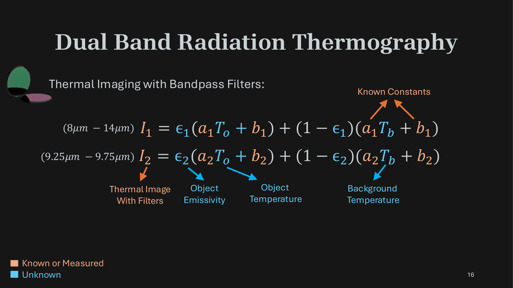
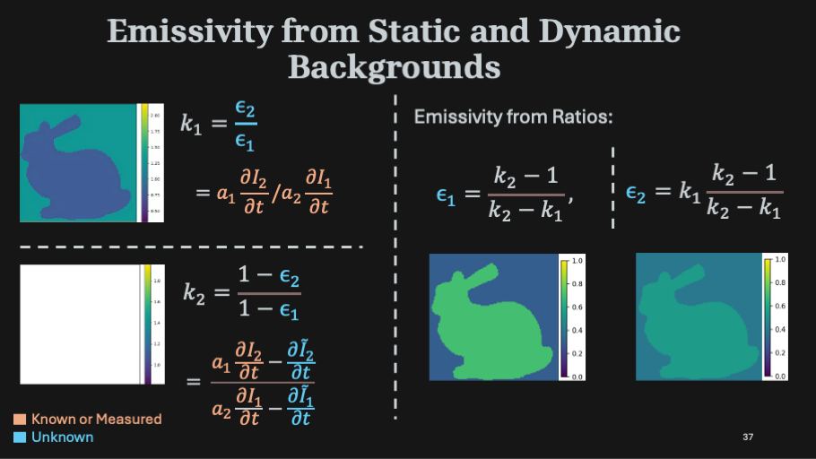

TL;DR People assume thermal cameras measure temperature, they actually don't. They capture a mix of light emitted by an object and light reflected off its surface. We separate the two from dual-band thermal video by exploiting two facts: emissivity varies across the thermal spectrum, and emission (governed by heat transport) and reflections (governed by light transport) evolve on different timescales. This recovers true temperature in dynamic scenes like a coffee pot cooling on a desk.
An off-the-shelf IR thermometer fails in two everyday situations:
A thermal camera doesn't see temperature directly. Each pixel is a weighted sum of light emitted by the object — governed by its temperature and how emissive the material is — and light reflected off its surface from the ambient environment.
Ignoring either reflection or emission is not possible for most common objects in everyday scenes.
With one camera and one band, two unknowns — emissivity ε and background temperature Tb — make this impossible to solve.
Each pixel measurement is a weighted sum of the object's emission and the reflected background. With both bands we get two equations per pixel — but we now have four unknowns: the two band emissivities ε1, ε2, the object temperature To, and the background temperature Tb.
If ε were known — the calibrated case — we can solve this system in closed form. The hard problem is the uncalibrated case, for which we propose the following two constraints based on the dynamic varitians in the background reflections.

To describe our method for the uncalibrated case, we set up a synthetic scene: an object — a bunny heating up under a light source — and a separate video of a person walking as the reflected background.
For any choice of ε, the observed thermal video is a convex combination of the two: I = ε·U(To) + (1−ε)·U(Tb). We'll use this scene to reason about what we can recover.
Looking at one pixel's signal over time, the structure that makes the uncalibrated problem tractable becomes clear: most of the time the background is static, and reflection changes — when they happen — show up as abrupt, sparse jumps in the signal.
This is the property we exploit. The next two panels turn it into two complementary constraints on the band emissivities — one from static-background pixels, one from dynamic-background pixels.
Most pixels in a scene have a background that doesn't change in time. At those pixels, ∂Tb/∂t = 0, so the temporal derivative of the signal is driven entirely by the object's emission.
Taking the ratio of ∂I/∂t across the two bands cancels To and leaves an emissivity ratio k1 = ε2/ε1 — computed purely from the temporal derivatives and known camera constants.
At pixels where the background does change, we decompose the signal as I(t) = Ĩ(t) + (1−ε)·a·Tb*(t) — a smooth emission-driven term plus a fast-varying residual capturing the reflection changes.
The temporal derivative of the residual, ratioed across bands, gives a complementary constraint k2 = (1−ε2)/(1−ε1). Together with k1, this pins down both band emissivities.
The two constraints — k1 = ε2/ε1 and k2 = (1−ε2)/(1−ε1) — are two equations in two unknowns. Inverting them gives the per-pixel band emissivities:
ε1 = (k2−1)/(k2−k1) and ε2 = k1·(k2−1)/(k2−k1).
With ε known purely from the spatio-temporal structure of the background, the temperatures To and Tb fall out of the original two-band equations — just like the calibrated case.

The smooth emission signal Ĩ(t) isn't known a priori — it has to be estimated. We pose this as a joint optimization that recovers ε1, ε2, To, Tb, and the smooth signal together.
The objective combines a smoothness loss (second-derivative regularizer), a Huber loss (data fidelity without over-flattening), and an MSE reconstruction loss. The ablation table shows each term meaningfully reduces error.
A borosilicate coffee pot contining hot liquid shows heat propagation on its surface, while a person moves in the background, waving their hands and uncovering a heat source.
An example that showcases our method operating in extremely low signal to noise ratio regime. A person transfers heat through hand contact onto an incandescent bulb. A person transfers heat to an incandescent bulb through hand contact, leaving a thermal fingerprint that gradually dissipates. Our uncalibrated method successfully separates the emission due to palm print from reflection of a person walking around and sipping a hot beverage.
In this example, a hot air gun is placed behind a glass plate to raise its temperature. The background reflection captures hand movements, light from a lighter, and a hand-inscribed "CV" text on a nearby board. These generate a faint thermal patterns on the glass, successfully separated by our method.
Hot liquid is poured into a wineglass, with heat gradually spreading across its surface. In the background, a person performs actions like waving their hands.
@InProceedings{Narayanan_2026_CVPR,
author = {Narayanan, Sriram and Ramanagopal, Mani and Narasimhan, Srinivasa},
title = {Dual Band Thermal Videography: Separating Time-Varying Reflection and Emission Near Ambient Conditions},
booktitle = {Proceedings of the IEEE/CVF Conference on Computer Vision and Pattern Recognition (CVPR)},
month = {June},
year = {2026},
pages = {199-208}
}
}
This work was partly supported by NSF grants IIS-2107236, and NSF-NIFA AI Institute for Resilient Agriculture.